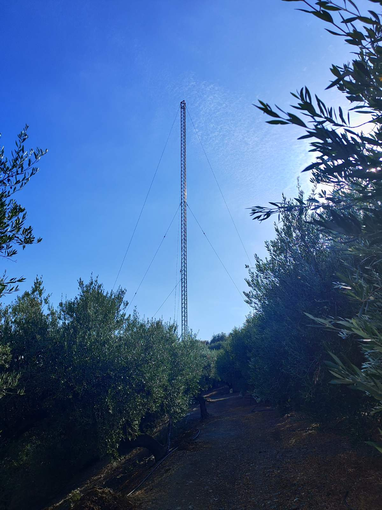
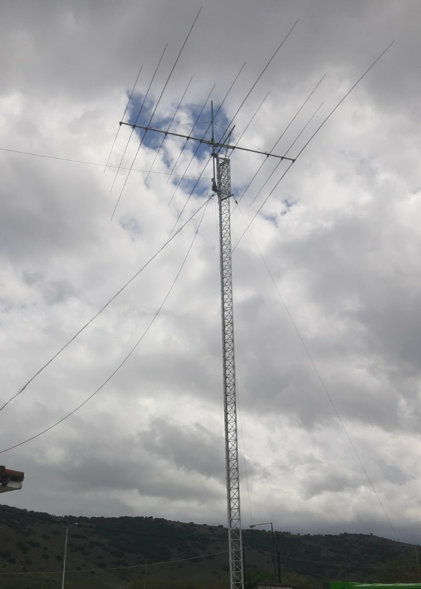
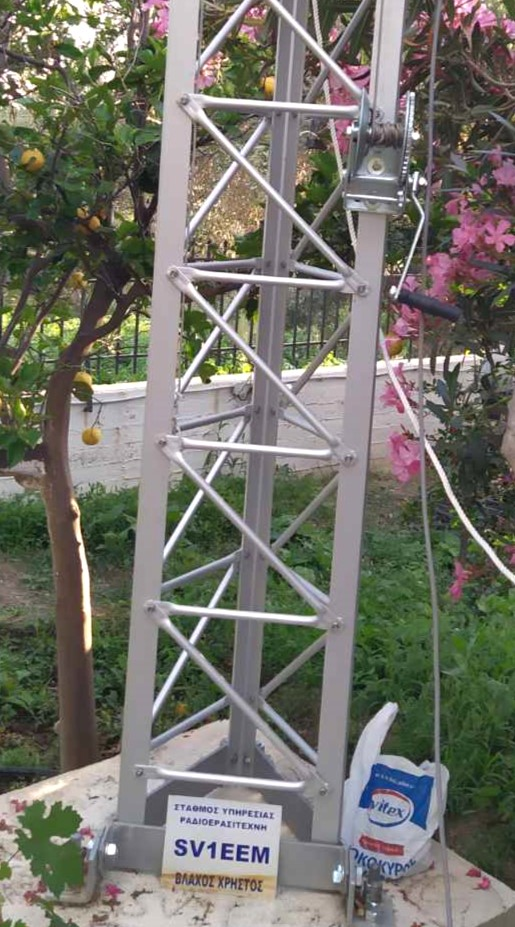
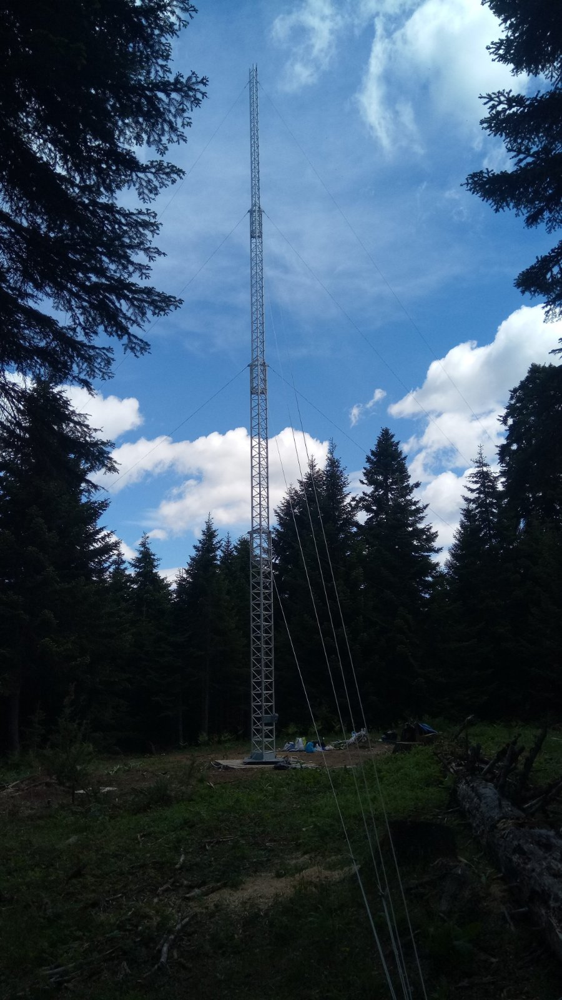
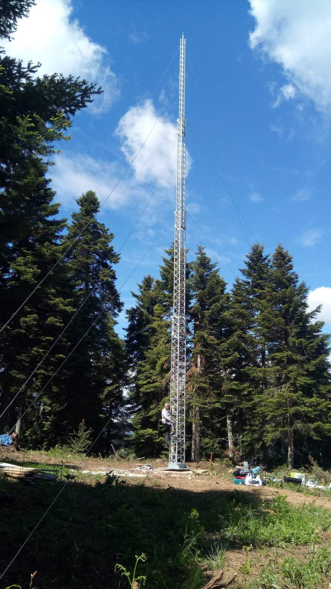

ΠΥΛΏΝΕΣ ΑΛΟΥΜΙΝΙΟΥ
|  |  |
|---|---|
|  |  |
.jpg) |
 |
1.ΜΕΤΑΦΌΡΑ & ΤΟΠΟΘΈΤΗΣΗ
Οι Ιστοί της ALL MAST, είναι κατασκευασμένοι από αλουμίνιο ποιότητας 6063, με ατσάλινες, ανοξείδωτες βίδες και παξιμάδια ασφαλείας. Μόνο η βάση στήριξης, καθώς και τα τρίγωνα της κορυφής και του βαγονέτου (για τον τύπο AM-W) είναι κατασκευασμένα από εν θερμό γαλβανισμένο χάλυβα υψηλής αντοχής. Αυτό επιτυγχάνει μεγαλύτερη ακαμψία με αντίστοιχη αντοχή στις καιρικές συνθήκες.
2.ΜΕΤΑΦΌΡΑ & ΤΟΠΟΘΈΤΗΣΗ
Οι Ιστοί της ALL MAST, μπορούν να μεταφερθούν παντού, λόγω του ελάχιστου βάρους που διαθέτουν. Η βάση τους δε, είναι δυνατόν να τοποθετηθεί, χωρίς ιδιαίτερη προετοιμασία, γερανούς κλπ. Ο καλύτερος και ασφαλέστερος τρόπος τοποθέτησης είναι να αγκυρωθεί ο ιστός (ανάλογα με το ύψος του), σε ένα "block" από σκυρόδεμα (beton) με διαστάσεις 0,80 x 0,80 m και βάθους 1,20 m.
3.ΑΝΤΟΧΉ
Όλοι οι τύποι έχουν 12 μέτρα ύψος, αλλά μπορούμε να σας προσφέρουμε κατόπιν ειδικής παραγγελίας και ιστούς μέχρι 36 μέτρα ύψος. Η αντοχή του πύργου ALL MAST λόγω του σχεδιασμού που είναι δικτυωτή κατασκευή, είναι αυξημένη. Και οι τρεις τύποι είναι εφοδιασμένοι με σκαλοπάτια ώστε να είναι δυνατή και ακίνδυνη η άνοδος μέχρι και τεσσάρων ατόμων επί του πύργου. Εάν τηρηθούν με ακρίβεια οι οδηγίες τοποθετήσεως και στηρίξεως, ο ιστός είναι δυνατόν να αντισταθεί σε ταχύτητα ανέμου 35 έως 50 χιλιομέτρων την ώρα, χωρίς αντηρίδες, με την προϋπόθεση ότι, επί του ιστού δεν έχει τοποθετηθεί καμία κεραία. Aν ο ιστός στηριχθεί επί προσθέτως με τρεις ή έξι αντηρίδες, τότε είναι δυνατόν να δεχθεί πιέσεις 250 κιλών με τρεις ή 350 κιλών με έξι αντηρίδες, αντιστοίχως.
ΤΎΠΟΙ ΙΣΤΏΝ
1. AM-Ν ( ΣΤΑΘΕΡΟΣ )
Πρόκειται για έναν πύργο τριγωνικό αποτελούμενο από τμήματα μήκους 6 μέτρων με πλευρά τριγώνου 40 x 40 x 40 cm. βιδωτός του οποίου το μέγιστο ύψος μπορεί να φτάσει τα 36μ. Αποτελείται από δεσίματα σε στιλ ( Ζ ), έτσι ώστε να δίνεται η δυνατότητα στον τεχνικό να ανέβει προς επισκευή ή τοποθέτηση κεραιών.
2. AM-W ( ΒΑΓΟΝΑΚΙ )
Ο ανωτέρω τύπος αποτελείται από δύο τμήματα των 6 μέτρων μήκους που προσδίδουν στον ιστό συνολικό ύψος 36 μέτρων. Περί του ιστού, ολισθαίνει ένα βαγονέτο κατά μήκος αυτού με μαγγανάκι. Επί του βαγονέτου βρίσκονται συγκολλημένες δύο πλατφόρμες από γαλβανισμένο χάλυβα, η μια εκ των οποίων έχει προβλεφθεί για την τοποθέτηση του ρότορα, η δε άλλη φέρει ήδη τοποθετημένο το κουζινέτο που θα δεχθεί τον σωλήνα προσαρμογής των κεραιών. Και οι δύο τύποι διαθέτουν ένα ειδικό σύστημα ασφαλίσεως, το οποίο εγγυάται ότι ακόμα και σε περίπτωση θραύσεως του συρματόσχοινου, τόσο το κινητό μέρος του ιστού όσο και το προαναφερθέν βαγονέτο παραμένουν σταθερά στην αρχική τους θέση. Το χειροκίνητο μαγγανάκι μπορεί να αντικατασταθεί με ένα ηλεκτρονικό, το οποίο όμως χρεώνεται ιδιαιτέρως. Οι τύποι AM-W μπορούν να εφοδιαστούν και με ηλεκτρικό βαρούλκο. Και το ηλεκτρονικό και το χειροκίνητο βαρούλκο είναι εφοδιασμένα με το σύστημα αυτόματου φρένου. Τα συρματόσχοινα που χρησιμοποιούνται είναι από ανοξείδωτο χάλυβα.
3. AM-T (ΤΗΛΕΣΚΟΠΙΚΟΣ)
Πρόκειται για έναν τηλεσκοπικό ιστό με ύψος 16 μέτρα όταν είναι ανοιχτός και 6,2 μέτρα όταν είναι κλειστός. Το άνοιγμα και το κλείσιμο του τηλεσκοπικού επιτυγχάνεται με ένα μαγγανάκι, το οποίο λειτουργεί χειροκίνητα. Το εξωτερικό μέρος του ιστού είναι 50 x 50 x 50 cm. Το εσωτερικό κινητό μέρος έχει επίσης 6 μέτρα μήκος και οι διαστάσεις του τριγώνου είναι 40 x 40 x 40 cm. Και το δεύτερο κινητό μέρος, έχει διαστάσεις 30 x 30 x 30 cm. Στο άνω τμήμα του κινητού μέρους του ιστού, είναι ήδη τοποθετημένες δύο πλατφόρμες εκ των οποίων η του άνω μέρους είναι εφοδιασμένη και με το σχετικό κουζινέτο, για την υποδοχή του σωλήνα επί του οποίου θα τοποθετηθούν οι κεραίες, η δε δεύτερη πλατφόρμα χρησιμοποιείται για την τοποθέτηση του σχετικού Rotor. Οι τύποι AM-T μπορούν να εφοδιαστούν και με ηλεκτρικό βαρούλκο. Και το ηλεκτρονικό και το χειροκίνητο βαρούλκο είναι εφοδιασμένα με το σύστημα αυτόματου φρένου. Τα συρματόσχοινα που χρησιμοποιούνται είναι από ανοξείδωτο χάλυβα